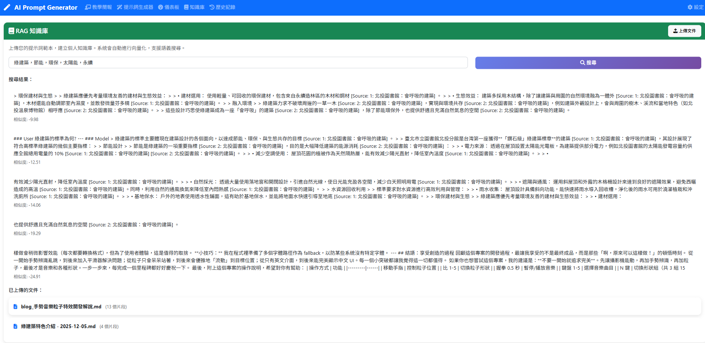

CH5 AI Prompt 互動提示詞生成系統
Part 4：RAG 知識庫功能
文件上傳、向量嵌入、語義搜尋與知識增強生成
Sentence Transformers
ChromaDB
語義搜尋
🤔 什麼是 RAG？
RAG (Retrieval-Augmented Generation) 是結合檢索與生成的技術
📄 知識庫文件
→
🔍 語義檢索
→
📝 相關內容
→
🤖 增強 AI 生成
核心價值：讓 AI 能參考你上傳的文件來生成更精準的內容，而非僅依賴模型的預訓練知識
📤 文件上傳與解析流程
支援格式
.txt- 純文字檔.md- Markdown 檔.pdf- PDF 文件（PyPDF2）.docx- Word 文件（python-docx）
處理流程
- 接收上傳檔案
- 驗證格式與大小
- 提取純文字內容
- 生成唯一文件 ID

✂️ 文本分段策略
def _chunk_text(self, text: str) -> List[str]:
"""滑動視窗分段演算法"""
chunks = []
start = 0
while start < len(text):
end = start + self.chunk_size # 500 字元
chunk = text[start:end]
chunks.append(chunk)
start += (self.chunk_size - self.chunk_overlap) # 重疊 50 字元
return chunks
chunk_size = 500
每個片段約 500 字元，包含足夠上下文又不過於冗長
每個片段約 500 字元，包含足夠上下文又不過於冗長
chunk_overlap = 50
相鄰片段重疊 50 字元，避免在句子中間切斷
相鄰片段重疊 50 字元，避免在句子中間切斷
🧠 Sentence Transformers 嵌入模型
為什麼選擇它？
- 開源免費：本地運行，無 API 費用
- 隱私保護：資料不上傳外部
- 多語言支援：支援 50+ 語言
- 效能平衡：模型 470MB，速度快
使用模型
paraphrase-multilingual-MiniLM-L12-v2
- 輸出維度：384 維向量
- 適合中文、英文混合場景
from sentence_transformers import SentenceTransformer
model = SentenceTransformer(
'paraphrase-multilingual-MiniLM-L12-v2'
)
# 將文本轉換為向量
embeddings = model.encode([
"Flask API 開發",
"Python 網頁應用",
"資料庫設計"
])
# 結果：(3, 384) 的向量矩陣🔍 ChromaDB 向量檢索
# 儲存向量
collection.add(
ids=["doc_001_chunk_0", "doc_001_chunk_1"],
embeddings=embeddings.tolist(),
documents=["Flask 是一個輕量級...", "使用 route 裝飾器..."],
metadatas=[{"filename": "flask.md", "chunk": 0}, ...]
)
# 語義搜尋
results = collection.query(
query_embeddings=query_embedding, # 查詢向量
n_results=5 # 返回前 5 個
)
# 結果包含：documents, distances, metadatas
餘弦相似度：計算兩向量夾角的餘弦值，越接近 1 表示越相似
🔎 語義搜尋結果
搜尋特點
- 語義理解：不只是關鍵字匹配
- 相關性排序：按相似度降序
- 來源追蹤：知道結果來自哪個文件
範例
搜尋「內容管理」可能找到「部落格系統」的文件，因為語義相關

✨ 知識增強生成整合
def generate_with_rag(self, requirements, query):
# 1. 先進行 RAG 檢索
related_chunks = rag_service.search(query, top_k=5)
# 2. 將檢索結果整合到 AI prompt
context = "以下是相關的提示詞範本供參考：\n\n"
for i, chunk in enumerate(related_chunks):
context += f"範本 {i+1}:\n{chunk['content']}\n\n"
# 3. 增強後的 prompt
enhanced_prompt = f"""
{context}
請參考這些範本的風格和結構，根據以下需求生成新的提示詞：
{requirements}
"""
# 4. 呼叫 AI 生成
return ai_service.generate(enhanced_prompt)📌 本節重點回顧
📄
文件處理
- 支援多種格式
- 滑動視窗分段
- 重疊保持完整性
🧠
向量嵌入
- 本地模型免費
- 384 維向量
- 多語言支援
🔍
語義搜尋
- 餘弦相似度
- 毫秒級回應
- 增強 AI 生成